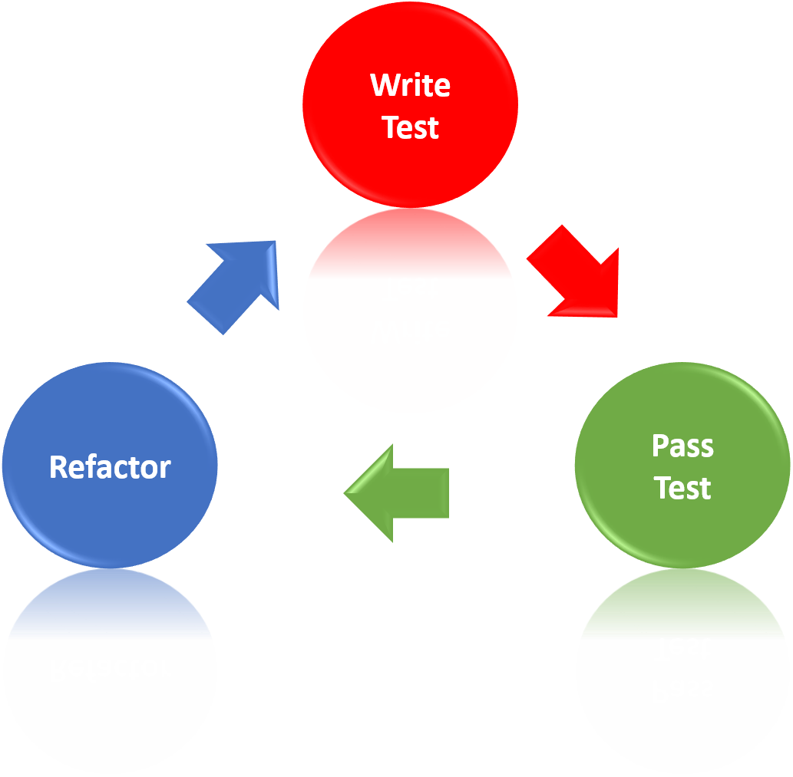
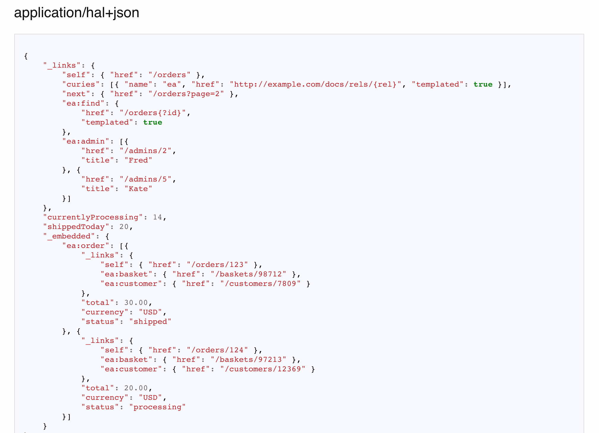
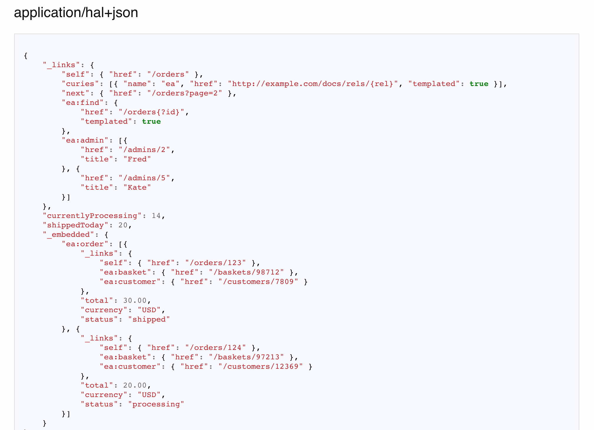
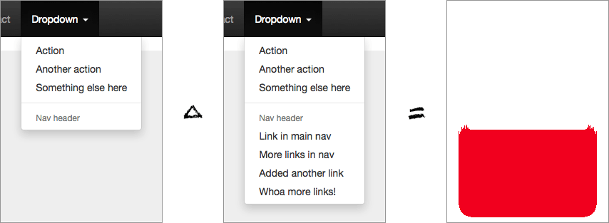

Testing
Agenda
- Why write test?
- Type of tests and what we test
- Properties of good tests
- Difference between unit/integration/functional tests
- Test-driven development
- Verifying with "Goldens"
- CI Testing strategies
- Jest
Why write tests?
To catch bugs!
While true, this is not the most important reason.
Why write tests? - In theory
- Faster dev cycles
- Better design
- Higher quality
- Making sure you are writing only what you need
Why write tests? - In reality
- Fast release cycles
- Finite (no) QA resources
- Large integrated codebase
- Person modifying the code is rarely original author
What are the type of tests?
Scope:
unit,
integration,
functional
Performance:
load,
stress
Perspective:
Correctness,
Usability (General, Specific axis: I18n, Accessibility)
Misc:
Security,
Policy Compliance
...
What do we test?
Common cases:
The happy paths,
In all their forms (E.g. wide chars Îñţérñåţîöñåļî~åţîöñ)
Edge cases
empty/0 items,
no data,
wrong input/output
Failure cases:
Failures in production lead to uncommon code
Anything that led to a bug:
Once it's fixed, you want it to stay fixed
Properties of a good test
- Each test method exercises one thing
- Comprehensive (all cases)
- Deterministic (stable output)
- Hermetic (independent)
Properties of a good unit tests
- Tests the "smallest" component possible
- Ideally each test exercises one path through one method
- Fast (< 10ms most of the time)
- No calls to a database, bigtable etc.
- Limited or no FileIO
- No sockets except to your own process
- No calls to external slow functions
Properties of a good integration test
- Tests interaction between components
- Ideally each test exercises the interaction between exactly two components
- Look for places where you used “stunt doubles” in unit tests. These are paths you haven’t tested yet
Properties of a good integration test

Properties of a good functional test
- Tests the system end to end
- Functional testing everything is not possible (combinatorial explosion)
- Stability matters, and is expensive
- Choose Functional tests that add confidence. Sample goals -- after executing all functional tests:
- Every page was loaded at least once
- Every subsystem was executed at least once
- Don't forget to load/stress/performance tests
Difference between
unit/integration/functional tests

| Featrure | Unit .. Functional |
|---|---|
| Speed |
| Featrure | Unit .. Functional |
|---|---|
| Isolation |
| Featrure | Unit .. Functional |
|---|---|
| Confidence in parts |

| Featrure | Unit .. Functional |
|---|---|
| Confidence in system |

| Featrure | Unit .. Functional |
|---|---|
| Fragility |
| Featrure | Unit .. Functional |
|---|---|
| Speed | |
| Isolation | |
| Confidence in parts | |
| Confidence in system | |
| Fragility |
Tests allocation

TDD*
*Test-driven development
Test-driven development (TDD) is a software development process that relies on the repetition of a very short development cycle: requirements are turned into very specific test cases, then the software is improved so that the tests pass.
TDD cycle
TDD +
- Documentation
- Architecture
- Modularity
- Helps prevents defects
- Automated regression test suite
- etc...
TDD -
- Maintenance
- Time
- Hard to apply to legacy code
- Hard to adapt to the flow
- Tests may be hard to write, esp. beyond the unit testing level
- etc...
TDD cycle
Verifying with "Goldens"
Deterministic program
A program is deterministic, or repeatable, if it produces the very same output when given the same input no matter how many times it is run.
Deterministic program
YES
function concat(a, b) {
return a + b;
}
NO
function getRandomFloat() {
return Math.random();
}
What is "Golden"
Golden is expected result of some deterministic program execution stored in a form of text (or JSON) file or as a screenshot of UI state.
Examples of "Goldens"
 

"Goldens" from one system can be passed as input into anther systems and so on.
var golden = TestUtils.readGolden("InputGoldenName");
var result = ClassUnderTest.exec(golden);
TestUtils.compareWithGolden(result, "OutputGoldenName");
Result of "Goldens"
Result of "Goldens"
CI Testing Strategy
What is CI
Continuous integration (CI) is the practice of merging all developers' working copies to a shared mainline several times a day.
Test Before integrating
Commit → Run Tests on commit → Integrate into master
+: greener build.
-: much slower dev.
Tests After integrating
Commit → Integrate into master → Run Tests on latest master
+: faster dev.
-: build less green. Buildcops presence required.
Combined testing
Commit → Run Tests (unit) on commit → Integrate → Run Tests (integration) on latest master
Jest
Jest
Jest is a delightful JavaScript Testing Framework with a focus on simplicity.
Test declaration language
xUnit
describe('yourModule', () => {
test('if it does this thing', () => {}
test('if it does the other thing', () => {}
})
yourModule > if it does this thing
RSpec
describe('yourModule', () => {
it('should do this thing', () => {}
it('should do the other thing', () => {}
})
yourModule > should do this thing
Example
Write test
// sum.test.js
const sum = require('./sum');
test('adds 1 + 2 to equal 3', () => {
expect(sum(1, 2)).toBe(3);
});
Run test
> jest
Result
PASS ./sum.test.js
✓ adds 1 + 2 to equal 3 (5ms)
Snapshot Testing
__tests__/link.react.test.js
import React from 'react';
import Link from '../Link.react';
import renderer from 'react-test-renderer';
it('renders correctly', () => {
const tree = renderer
.create(<Link page="http://www.facebook.com">FB</Link>)
.toJSON();
expect(tree).toMatchSnapshot();
});
Snapshot Result
__tests__/__snapshots__/link.react.test.js.snap
exports[`renders correctly 1`] = `
<a
className="normal"
href="http://www.facebook.com"
onMouseEnter={[Function]}
onMouseLeave={[Function]}
>
FB
</a>
`;
Async Tests
// The assertion for a promise must be returned.
it('works with promises', () => {
expect.assertions(1);
return user.getUserName(4)
.then(data => expect(data).toEqual('Mark'));
});
Mocks
Timers
jest.useFakeTimers();
Mock Modules
jest.genMockFromModule('fs');
Mock Functions
const mockFn = jest.fn()
.mockImplementation(scalar => 42 + scalar);